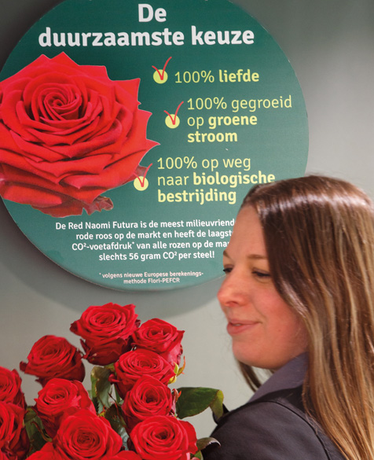
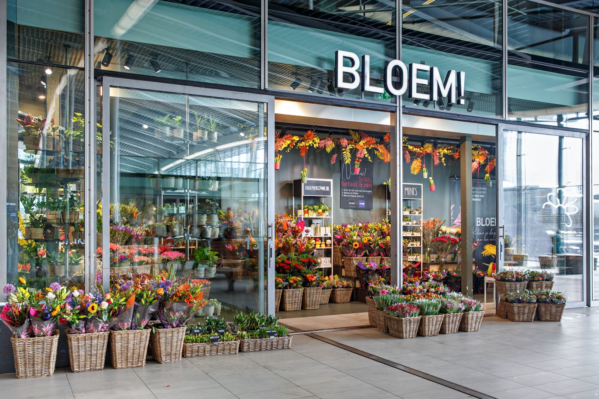
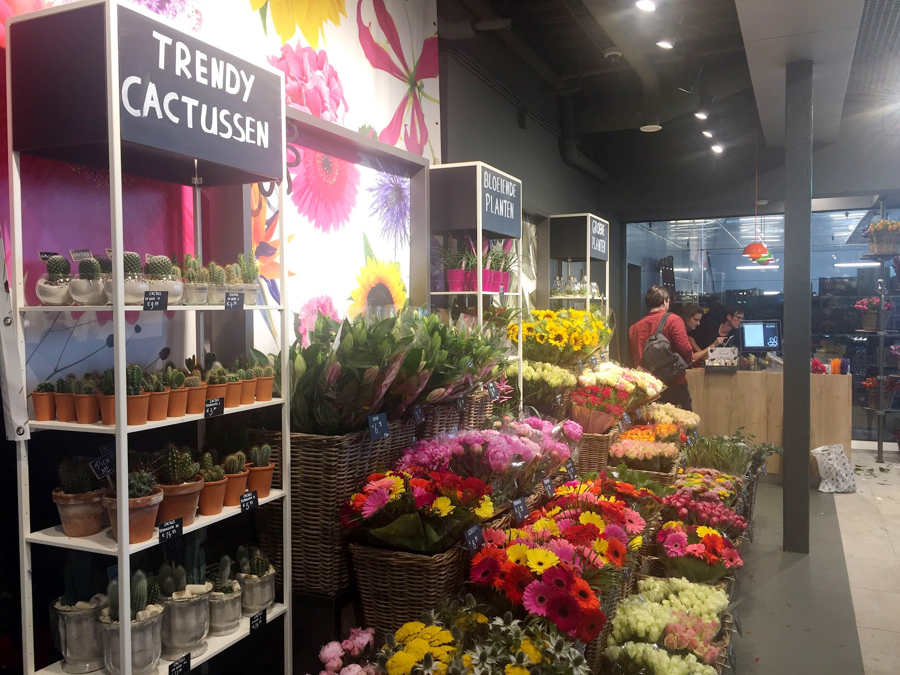
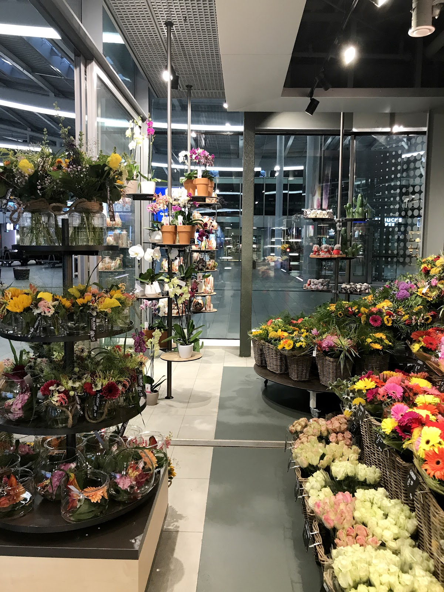
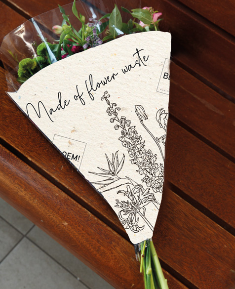
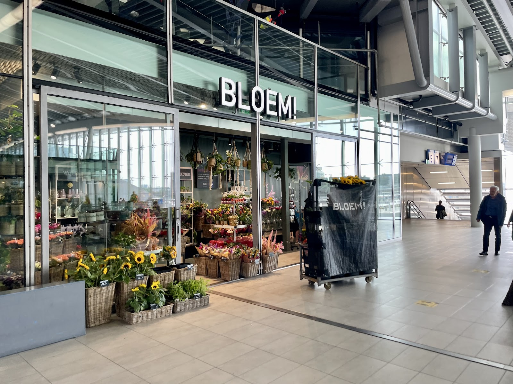

De duurzaamste rode roos ter wereld.
Als lange rode roos vind je bij ons exclusief de Red Naomi Futura van kwekerij Porta Nova. Geen rozenkweker ter wereld haalt een lagere CO₂-uitstoot per steel.
Bloemist in de Stationshal, Utrecht Centraal
Verse plukboeketten, losse bloemen en planten, elke dag van vroeg tot laat. Zelf kiezen of laten samenstellen, en je bent zo weer op weg.
4,2 uit 130 Google-reviews

Vroeg op weg naar je werk of laat terug van een verjaardag: van maandag tot en met zaterdag staan we er tot negen uur 's avonds. Op zondag tot zeven uur.
Stationshal 13, Utrecht Centraal
| Maandag | 08:00 – 21:00 |
|---|---|
| Dinsdag | 08:00 – 21:00 |
| Woensdag | 08:00 – 21:00 |
| Donderdag | 08:00 – 21:00 |
| Vrijdag | 08:00 – 21:00 |
| Zaterdag | 08:00 – 21:00 |
| Zondag | 08:30 – 19:00 |
Onze bloemen komen vers van de veiling en het assortiment wisselt mee met de seizoenen. Loop binnen en kijk wat er vandaag staat.
Heb je een speciale wens? Bel ons even, we denken graag met je mee.


Kleur je dag,
of die van een ander.
4,2 gemiddeld uit 130 Google-reviews
"Super fijne ervaring! Anemiek was heel vriendelijk en nam de tijd om uit te leggen hoe ik mijn pioenrozen moest verzorgen. De pioenrozen waren prachtig en van topkwaliteit. Ze hield ze zelfs voor me in het water terwijl ik een afspraak had. Echt geweldige service!"
"Bloemen blijven lang goed! ‘s avonds 1 minuut voor sluitingstijd gekocht en staan ruim een week later nog als nieuw. Aangenaam verrast door de kwaliteit."
"Zo goed geholpen net! Allemaal potten en planten gekocht en zo goed geholpen door Hala! Een echte topper!! Super blij mee!"
"Ik heb nooit naam van persoon die mij net geholpen heeft kunnen weten, maar zij was heel erg behulpzaam en gaf geen kik toen ik gezegd heb dat ik doof ben maar zorgde juist voor oogcontact wanneer zij praatte. Was echt superfijn detail voor mij. En witte lelies heeft zij zorgzaam ingepakt en ook nog sneller afgemaakt t"
"Super bedankt Tamar en Isa voor het mooie boeketje snelle service en vriendelijk geholpen kom vaker nu ik weet dat het zo snel gaat!!!!"
We kijken bij de inkoop niet alleen naar schoonheid en kwaliteit. We houden rekening met de MPS-certificering, die laat zien hoe zwaar bloemen en planten het milieu belasten, en we letten op het land van herkomst.

Als lange rode roos vind je bij ons exclusief de Red Naomi Futura van kwekerij Porta Nova. Geen rozenkweker ter wereld haalt een lagere CO₂-uitstoot per steel.

Gebroken stelen en afgesneden bloemstukken gooien we niet weg. Een Nederlandse papierfabriek maakt er het papier van waarin we je bos inpakken. Minder transport, minder uitstoot.
Elke euro die je in de winkel besteedt, levert een spaarpunt op. Meld je aan en je krijgt direct €2,50 korting op je eerste aankoop. Je punten vervallen niet.
Aanmelden voor sparen
Kees en Ineke Vrolijk begonnen in 1988 met een bloemenwinkel in Amsterdam, toen nog onder de naam Fleurtiek. Inmiddels hebben hun kinderen Rodrique en Celine het bedrijf overgenomen en zetten ze de familietraditie voort.
Op de bloemenveiling in Aalsmeer hebben we ons eigen verdeelcentrum. Daar kopen we in, stellen we boeketten samen en brengen onze chauffeurs alles vers en op tijd naar de winkels. Ook naar die van ons in Utrecht.
Kom gezellig langs, of bel of mail ons als je iets wilt vragen of een speciale wens hebt.
Adres
Stationshal 13
3511 ED Utrecht
Open in Google Maps
Bellen
030 307 4465
Mailen
info@bloemenzaak.nl
Openingstijden
Maandag t/m zaterdag 08:00 – 21:00
Zondag 08:30 – 19:00